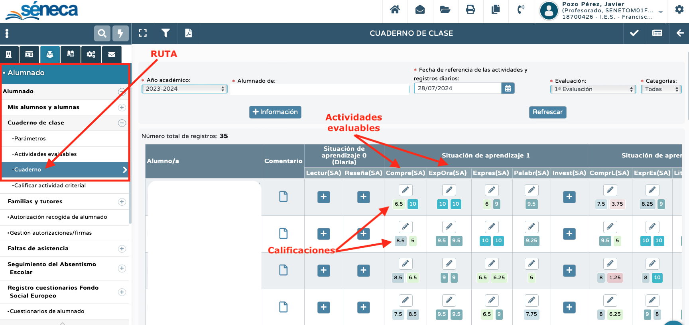
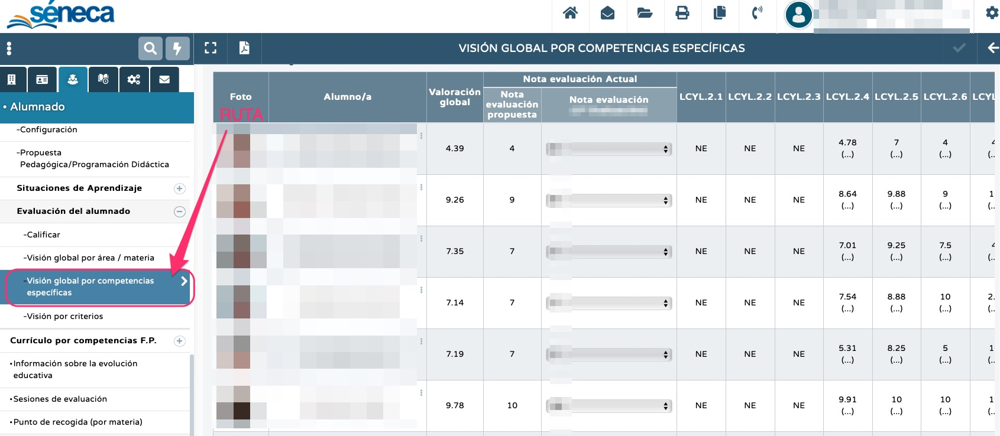

El cuaderno de Séneca es una poderosa herramienta para la recopilación de la información del proceso de evaluación, algo que nos facilitará mucho su análisis para la posterior adopción de medidas educativas encaminadas a la mejora del aprendizaje de nuestro alumnado.
Por ello, es muy importante conocer y consultar periódicamente unas pantallas clave relacionadas con el proceso de evaluación. Son las siguientes:
Pantalla "cuaderno".
Esta pantalla la usaremos para calificar las actividades evaluables de nuestro cuaderno. En ella aparecen las actividades evaluables creadas previamente, listas para introducir sus notas correspondientes. Podemos acceder a ella a través de la ruta: ALUMNADO > alumnado > cuaderno de clase > cuaderno. La vemos en esta imagen:

Pantalla "visión global por área / materia".
El cuaderno de Séneca es una poderosa herramienta para la recopilación de la información del proceso de evaluación, algo que nos facilitará mucho su análisis para la posterior adopción de medidas educativas encaminadas a la mejora del aprendizaje de nuestro alumnado.
Por ello, es muy importante conocer y consultar periódicamente unas pantallas clave relacionadas con el proceso de evaluación. Son las siguientes:
Pantalla "visión global por competencias específicas".
Esta pantalla recoge las calificaciones de nuestro alumnado en las distintas competencias específicas del currículo de nuestra asignatura. Para ello -tal y como establece la normativa-, Séneca recoge las calificaciones de los diferentes criterios asociados a cada competencia específica y calcula su media aritmética, siendo esta la nota de la competencia específica. Por ejemplo, si una competencia específica tiene asociados tres criterios de evaluación, cada uno de ellos aportará un tercio a la nota de dicha competencia. En el caso de que todavía no se haya evaluado uno o varios criterios, Séneca no tendrá en cuenta al criterio no evaluado.
Además, en esta pantalla se puede observar la valoración global, es decir, la media aritmética de todas las competencias específicas calificadas hasta el momento y una propuesta de nota. En cualquier caso, siempre será la / el docente quien decida la nota de la evaluación.
Podemos ver la pantalla "visión global por competencias específicas" en esta imagen:

Resumen.
En resumen, podemos ver cómo acceder a estas pantallas, así como su utilidad, en el siguiente vídeo: